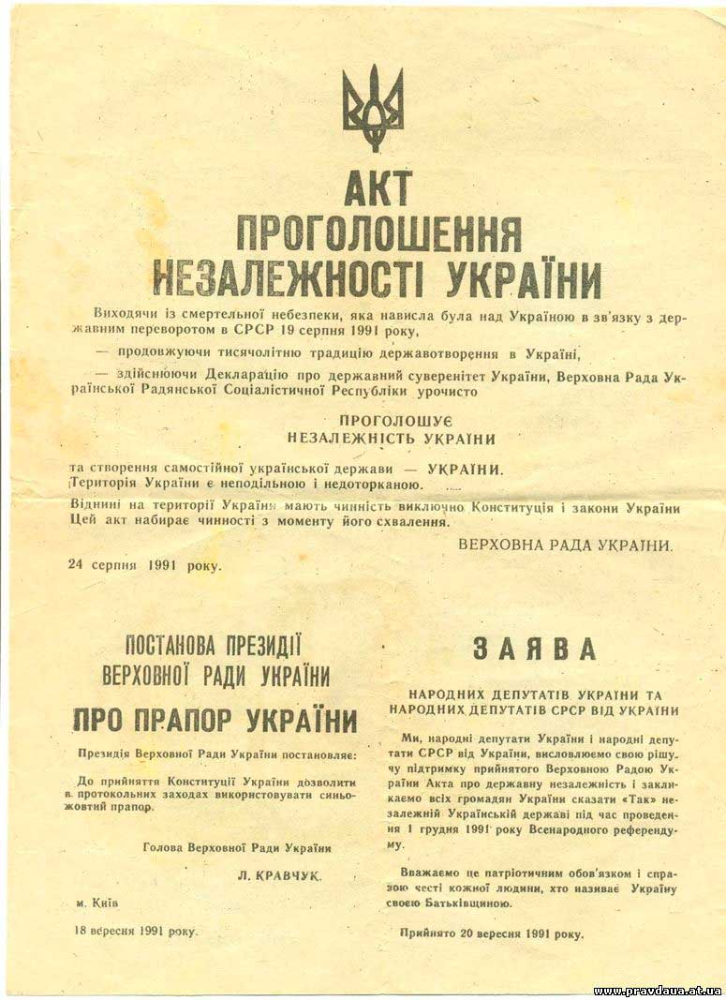

Розпад Радянського Союзу та незалежна Україна

Революція на граніті
2 жовтня 1990 р. розпочались студентські протести та голодування в Києві на Жовтневій площі.Вони виступали за:
- недопущення підписання нового союзного договору;
- перевибори Верховної Ради УРСР на багатопартійній основі не пізніше весни 1991 року;
- повернення на територію УРСР українських солдатів а також забезпечення проходження військової служби
- юнаками-українцями виключно на території республіки;
- націоналізація майна Компартії України та ЛКСМУ;
- відставка голови Ради Міністрів УРСР Віталія Масола.
2 жовтня 1990 р. розпочались студентські протести та голодування в Києві на Жовтневій площі.Вони виступали за:
- недопущення підписання нового союзного договору;
- перевибори Верховної Ради УРСР на багатопартійній основі не пізніше весни 1991 року;
- повернення на територію УРСР українських солдатів а також забезпечення проходження військової служби
- юнаками-українцями виключно на території республіки;
- націоналізація майна Компартії України та ЛКСМУ;
- відставка голови Ради Міністрів УРСР Віталія Масола.

Декларація про державний суверенітет України
У березні 1990 р. внесені зміни в Конституцію СРСР, 6-а стаття, що визначала керівну роль КПРС у радянському суспільстві, втратила свою чинність. 16 липня 1990 р. після проголошення суверенітету прибалтійськими республіками та Російською Федерацією, Верховна Рада УРСР ухвалила «Декларацію про державний суверенітет України». В цьому документі проголошено державний суверенітет України як верховенство, самостійність, повноту і неподільність влади республіки у межах її території. 17 березня 1991 р., згідно з постановою Верховної Ради СРСР, відбувся загальносоюзний референдум щодо збереження Радянського Союзу.

Акт проголошення незалежності України
На референдум винесено таке питання:«Чи вважаєте Ви за необхідне збереження СРСР як оновленої федерації рівноправних суверенних республік, в якій повною мірою гарантуватимуться права і свобода людини будь-якої національності?». 24 серпня 1991 р. позачергова сесія Верховної Ради УРСР прийняла «Акт проголошення незалежності України».

© 2023 memory.org.ua
Всі права захищені.
Всі права захищені.
ІСТОРИЧНІ ПЕРІОДИ
Українська революція та боротьба за збереження державної незалежності (1917-1921 рр.)Голодомор (1932-1933 рр.)Червоний терор в 1917-1939 рр.Україна під час Другої світової війни (1939-1945 рр.)Рух опору (ОУН, УПА)Україна в перші повоєнні роки (1945 — на початку 1950-х рр.)Україна в умовах десталінізації (1953-1964 рр.)Україна в період загострення кризи радянської системи (1965-1985 рр.)Розпад Радянського Союзу та незалежна Україна (1985-1991 рр.)Російсько-українська війнаУкраїнці в еміграціїВінницька психіатрична лікарняТабір для радянських військовополонених
Архів
Архів військовополоненихАВТОРСЬКИЙ КОНТЕНТ
Думки, висновки чи рекомендації належать авторам матеріалів, та можуть не співпадати з поглядами адміністрації сайту.Фінансова звітність за 2020р.Збір коштів на ЗСУСпіввласником сайту є ГО «Брат за брата України»
Власником сайту є ГО "Автомайдан @Вінниччина"e-mail: avtomaydanvin@gmail.comконтактний телефон: 063 933 0093